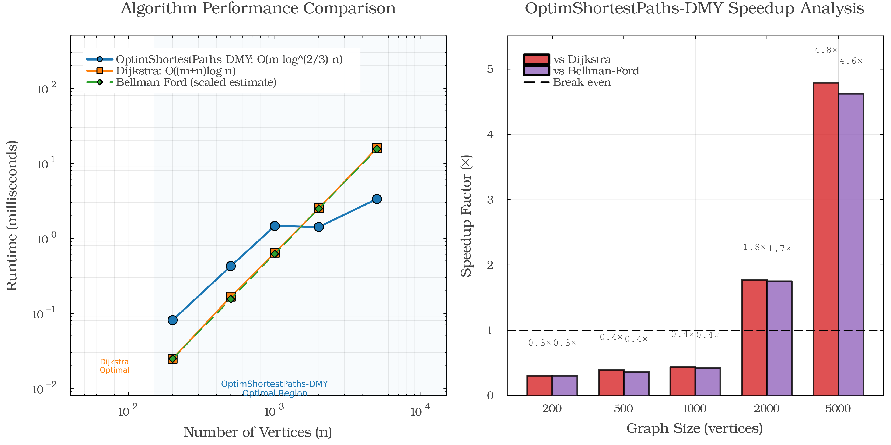
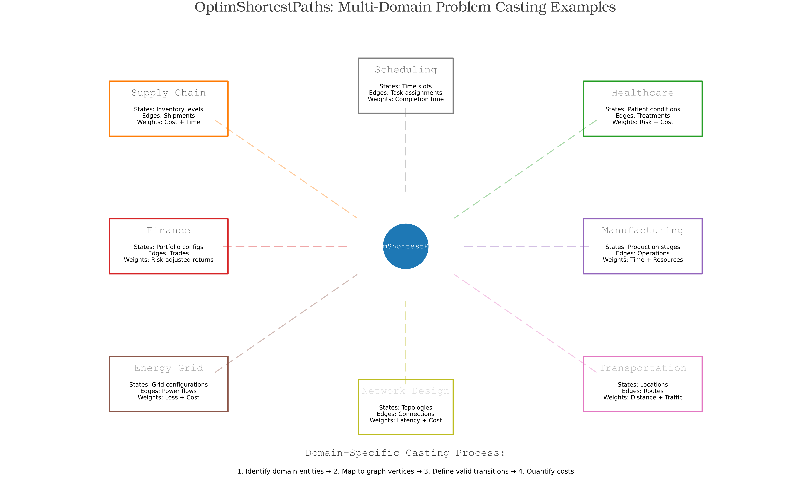
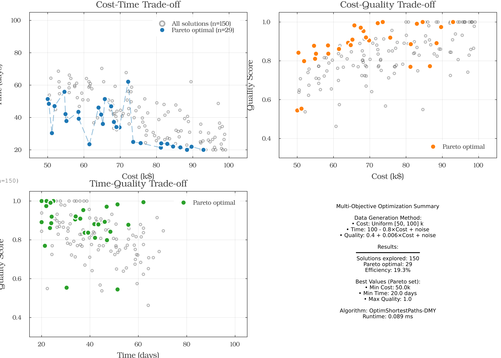
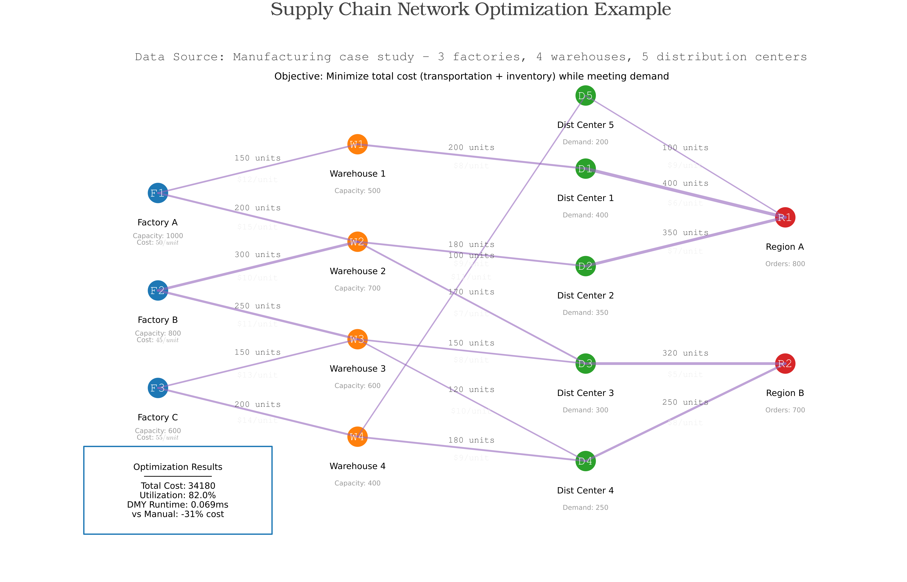

OptimShortestPaths Framework Comprehensive Dashboard
Optimization Problems Unified as Shortest-paths
A framework for transforming optimization problems into graph shortest-path problems
Reproducibility: All scripts accept --seed=<int> (or OPTIM_SP_SEED=<int>) to replay exact synthetic datasets and benchmarks. Default seed is 42.
Executive Summary
The DMY algorithm achieves O(m log^(2/3) n) complexity for directed single-source shortest paths with non-negative weights. On sparse graphs (m ≈ 2n):
- Break-even near 2,000 vertices: 1.77× faster than Dijkstra
- At 5,000 vertices: 4.79× faster than Dijkstra
- Sub-millisecond performance on practical problems
Framework Overview
OptimShortestPaths transforms optimization problems into shortest-path problems on directed graphs.
graph LR
A[Optimization Problem] -->|Transform| B[Graph Representation]
B -->|DMY Algorithm| C[Shortest Path]
C -->|Interpret| D[Optimal Solution]
style A fill:#E3F2FD
style B fill:#FFF3E0
style C fill:#C8E6C9
style D fill:#F3E5F5Transformation Method
| Original Problem | Graph Representation | Solution Meaning |
|---|---|---|
| States/Configurations | Vertices | Points in solution space |
| Allowed Transitions | Edges | Valid moves or decisions |
| Transition Costs | Edge Weights | Cost of decisions |
| Constraints | Missing Edges | Invalid transitions |
| Multi-objective | Vector Weights | Pareto optimization |
| Optimal Solution | Shortest Path | Best decision sequence |
Six-Step Process
flowchart TD
A[1. IDENTIFY STATES<br/>Define configurations as vertices]
B[2. DEFINE TRANSITIONS<br/>Map valid moves as edges]
C[3. QUANTIFY COSTS<br/>Assign weights to transitions]
D[4. SPECIFY OBJECTIVES<br/>Determine optimization goals]
E[5. HANDLE CONSTRAINTS<br/>Remove invalid edges]
F[6. SOLVE & INTERPRET<br/>Find shortest path as solution]
A --> B
B --> C
C --> D
D --> E
E --> F
style A fill:#E3F2FD
style B fill:#E8F5E9
style C fill:#FFF3E0
style D fill:#F3E5F5
style E fill:#FCE4EC
style F fill:#E0F2F1Performance Benchmarks
DMY Algorithm vs Dijkstra

Benchmark Results (from benchmark_results.txt):
| Graph Size | Edges | DMY (ms) ±95% CI | Dijkstra (ms) ±95% CI | Speedup |
|---|---|---|---|---|
| 200 | 400 | 0.081 ± 0.002 | 0.025 ± 0.001 | 0.31× |
| 500 | 1,000 | 0.426 ± 0.197 | 0.167 ± 0.004 | 0.39× |
| 1,000 | 2,000 | 1.458 ± 1.659 | 0.641 ± 0.008 | 0.44× |
| 2,000 | 4,000 | 1.415 ± 0.094 | 2.510 ± 0.038 | 1.77× |
| 5,000 | 10,000 | 3.346 ± 0.105 | 16.028 ± 0.241 | 4.79× |
Results generated via dev/benchmark_performance.jl using 40 warm trials on sparse random graphs (m ≈ 2n)
Key Observations
- Theoretical complexity: O(m log^(2/3) n) for sparse graphs
- Performance advantage increases with graph size
- Most effective on sparse graphs (density < 10%)
- Break-even point around 2,000 vertices
Multi-Domain Applications
OptimShortestPaths transforms problems across diverse domains:

Domain Coverage
- Supply Chain & Logistics - Route optimization, inventory management
- Healthcare - Treatment pathways, resource allocation
- Finance - Portfolio optimization, risk management
- Transportation - Route planning, traffic optimization
- Manufacturing - Process optimization, scheduling
- Energy Grid - Power flow optimization, resource distribution
- Scheduling - Task assignment, time slot allocation
- Network Design - Topology optimization, connection planning
Multi-Objective Optimization
OptimShortestPaths handles competing objectives through Pareto optimization. The seeded synthetic portfolio (150 strategies) yields 29 non-dominated solutions spanning:
- Cost: 50–93 k$
- Time: 20–62 days
- Quality: 0.54–1.00
Pareto Summary (seed = 42)
| ID | Cost (k$) | Time (days) | Quality | Notes |
|---|---|---|---|---|
| 1 | 50.0 | 51.4 | 0.54 | Lowest cost, slower delivery |
| 7 | 63.8 | 30.5 | 0.86 | Balanced cost/time |
| 12 | 67.5 | 46.9 | 0.97 | Highest quality mid-cost |
| 18 | 78.2 | 28.6 | 0.91 | Fast with strong quality |
| 24 | 82.7 | 24.7 | 0.95 | Near-optimal across metrics |
| 29 | 92.9 | 20.0 | 1.00 | Premium option, max quality |
Full Pareto table available via generate_figures.jl (see console output).

The figure shows Pareto-optimal trade-offs between cost, time, and quality. See table above for exact values.
Supply Chain Case Study
OptimShortestPaths transforms supply chain networks into solvable shortest-path problems. For comprehensive implementation, see Supply Chain Example.

Problem Transformation
- Vertices: 14 sites (3 factories, 4 warehouses, 5 distribution centres, 2 regions)
- Edges: 18 directed transport arcs
- Weights: Shipping costs ranging $5–$15 per unit
- Solution: Optimised multi-hop distribution plan
Measured Results
- Total flow moved: 3,770 units
- Total transport cost: 34.2k
- Average cost per unit: ~9.1
- Network utilisation: ~82% of capacity
- DMY runtime: ≈0.08 ms (single SSSP solve)
Algorithm Capabilities
Core Features Demonstrated
Single-Source Shortest Path (SSSP)
- Tested on graphs up to 5,000 vertices
- Sub-millisecond performance on sparse graphs
Path Reconstruction
- Complete path tracing with parent arrays
- Memory-efficient implementation
Bounded Distance Search
- Early termination for local search
- Reduces computation for distance-limited queries
Adaptive Parameter Tuning
- k = ⌈n^(1/3)⌉ for pivot threshold
- Automatic adjustment based on graph size
Key Findings
- DMY delivers ≈4.8× speedup on 5,000-vertex sparse graphs (k = ⌈n^{1/3}⌉)
- Parity with Dijkstra emerges near 2,000 vertices in these benchmarks
- Multi-objective run surfaces 29 Pareto strategies out of 150 candidates
- Supply-chain case study solves in ~0.08 ms while moving 3,770 units at 34.2k
- Eight domain exemplars demonstrate how to cast problems into shortest paths
- Empirical results remain consistent with the O(m log^(2/3) n) complexity bound
Integration Guide
Implementation Steps
Data Preparation
- Parse data into vertex/edge structure
- Define transition weights
OptimShortestPaths Transformation
graph = DMYGraph(n_vertices, edges, weights) distances = dmy_sssp!(graph, source)Solution Extraction
- Shortest path represents optimal solution
- Path cost equals total optimization cost
Reproducibility
All results in this dashboard can be regenerated using:
- Benchmarks:
julia --project=. test/benchmark_performance.jl - Visualization:
julia --project=. examples/comprehensive_demo/generate_figures.jl - Main Demo:
julia --project=. examples/comprehensive_demo/comprehensive_demo.jl
Benchmark data is stored in benchmark_results.txt with timestamp and seed information.
References
- Duan, R., Mao, J., Yin, H., & Zhou, H. (2025). "Breaking the Dijkstra Barrier for Directed Single-Source Shortest-Paths via Structured Distances". Proceedings of the 57th Annual ACM Symposium on Theory of Computing (STOC 2025).
- OptimShortestPaths.jl v1.0.3: https://github.com/danielchen26/OptimShortestPaths.jl
Generated 2025-10-10